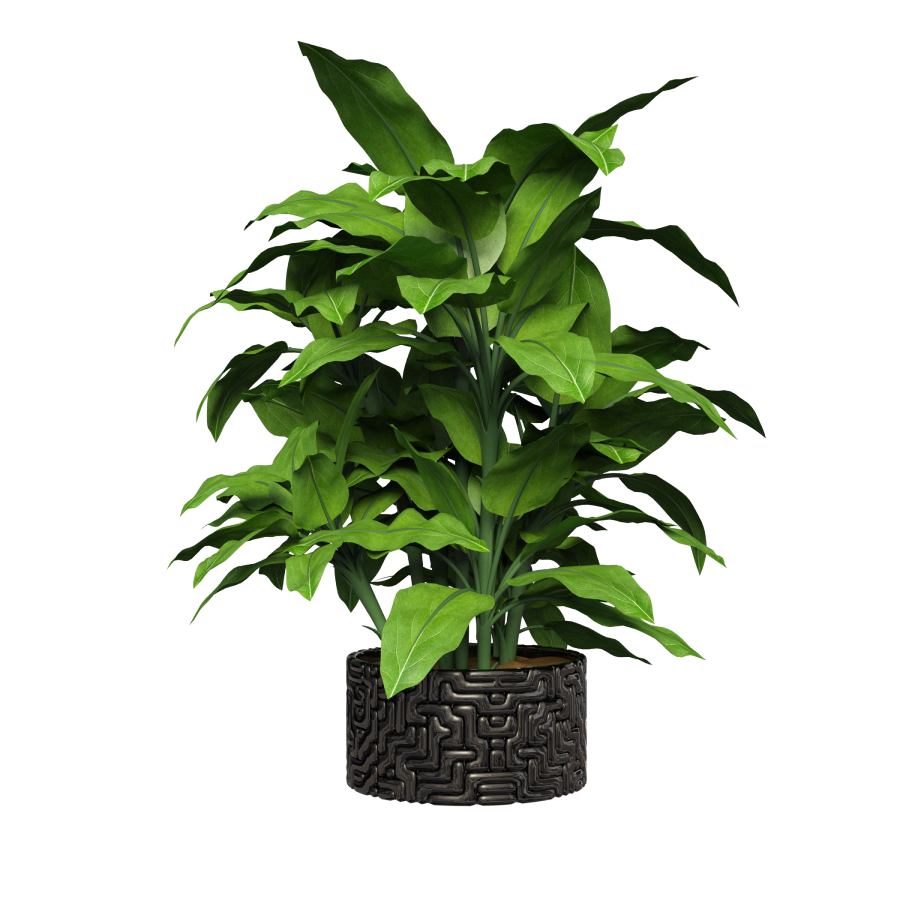

Activities
E-events
Plastic cups grow plants
F-green
Homepage
Q&A
About us
The F-Green website is a pioneering platform that combines
technology with environmental protection, aiming to create a greener
and more sustainable world.
Contact with us
Phone number:
0123-345-678
Address:
FPT University Da Nang, Hoa Hai ward, Ngu Hanh Son district
Email:
fgreen@gmail.com
© Copyright belongs to F-Green


Environmental Protection
F-Green is committed to protecting the environment through
encouraging recycling and reducing plastic waste. The program of
earning points and planting trees helps raise community awareness
about the importance of protecting the green planet.
Community Encouragement
F-Green creates a community of conscious consumers, encouraging
them to participate in environmental protection activities. Every
point accumulated and every tree planted is a testament to their
contribution to making the world a better place.
Community Encouragement
Using advanced technology such as code and blockchain, F-Green
ensures transparency and efficiency in point accumulation and
point conversion. This creates a reliable system for both
customers and partners.
Partner Support
The website provides tools and data for partner stores to track
and improve customer purchasing and return frequency, thereby
improving service quality and building relationships. sustainable
relationship with customers.
The F-Green website is a pioneering platform that combines
technology with environmental protection, aiming to create a
greener and more sustainable world. F-Green offers partners the
opportunity to participate in a unique program where their
customers can earn points for using plastic cups, and thereby
contribute to planting trees.
Core values
Technology for the Environment
F-Green applies advanced technology to create an effective and
user-friendly point accumulation system. When customers use
plastic cup products from partner stores, they will receive a code
printed on the cup. Customers can enter this code into the system
on the F-Green website to accumulate points.
Convert Points into Trees
A special feature of F-Green is the accumulated point conversion
program. When customers accumulate enough points, they can redeem
them to plant a tree in their name. This is not only a great way
to encourage customers to protect the environment but also a
personal mark, a meaningful gift for the future.
Support Partners to Track Customers
The F-Green website not only benefits customers, but also assists
partner stores in tracking customer purchase frequency and return.
In this way, stores can grasp customers' consumption habits,
thereby improving services and building more sustainable
relationships.
Committed to the Environment
F-Green is committed to accompanying partners and customers in the
journey of environmental protection. Every plastic cup recycled,
every point accumulated, and every tree planted are small but
important steps forward in minimizing negative impacts on the
environment.
The F-Green website is a pioneering platform that combines
technology with environmental protection, aiming to create a
greener and more sustainable world. F-Green offers partners the
opportunity to participate in a unique program where their
customers can earn points for using plastic cups, and thereby
contribute to planting trees.
F-GREEN
Sustainable development goals
Environmental Protection
Minimize Plastic Waste
Planting Trees
Raising Community Awareness